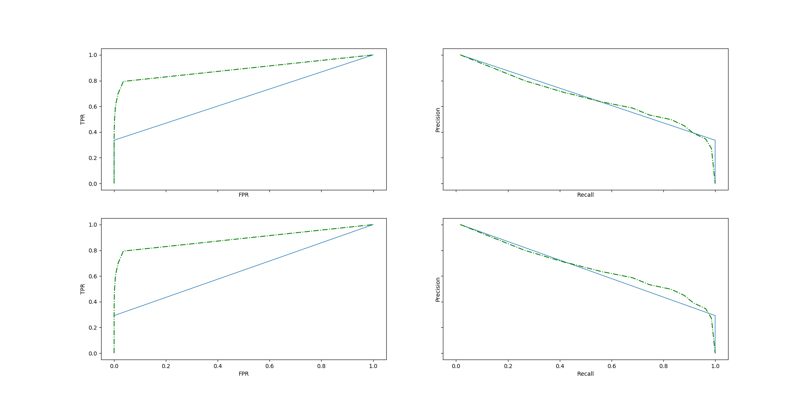

example: detecting fraud on transaction data¶
An example using FraudToRules for finding good rules in a fraud detection setting.
FraudToRules find logical rules with high precision and fuse them. Finding good rules is done by fitting classification and regression trees to sub-samples. A fitted tree defines a set of rules (each tree node defines a rule); rules are then tested out of the bag, and the ones with higher precision are selected and merged. This produces a integer-valued decision function, reflecting for each new samples how many rules have find it abnormal.
Out:
['age', 'credit1M', 'nbTransactions1h', 'nbTransactions24h', 'accepteur_ZBBIOHSD', 'accepteur_AIRFRANCE', 'accepteur_AMAZON', 'accepteur_EASYJET', 'accepteur_GOOGLE', 'accepteur_HM', 'accepteur_LEBONCOIN', 'accepteur_PAYPAL', 'accepteur_UBER', 'accepteur_ZARA', 'securizedTransaction_False', 'securizedTransaction_True']
best rule precision: 1.0
print(__doc__)
import numpy as np
import pandas as pd
import matplotlib.pyplot as plt
from sklearn.metrics import roc_curve, precision_recall_curve, auc
from sklearn.ensemble import RandomForestClassifier
from ftrules import FraudToRules
rng = np.random.RandomState(42)
# data
data = pd.read_csv('dataset.csv')
target = data['isFraude'].values
del data['isFraude']
data = pd.get_dummies(data, columns=['accepteur', 'securizedTransaction'])
# rm * in binary col name
feature_names = list(data.columns)
feature_names[4] = 'accepteur_ZBBIOHSD'
data.columns = feature_names
print(feature_names)
data = data.values
n_samples = data.shape[0]
n_samples_train = int(n_samples / 2)
y_train = target[:n_samples_train]
y_test = target[n_samples_train:]
X_train = data[:n_samples_train]
X_test = data[n_samples_train:]
# fit the model
clf = FraudToRules(max_depth=2, max_features=0.5, max_samples_features=0.5,
random_state=rng, n_estimators=10,
feature_names=feature_names)
clf.fit(X_train, y_train)
RF = RandomForestClassifier()
RF.fit(X_train, y_train)
scoring = clf.decision_function(X_test)
scoring_RF = RF.predict_proba(X_test)[:, 1]
scoring_one_rule = np.zeros(X_test.shape[0])
rule = clf.rules_[0][0]
detected_index = list(
pd.DataFrame(X_test, columns=feature_names).query(rule).index)
scoring_one_rule[detected_index] = 1
print('best rule precision:', y_test[detected_index].mean())
# XXX add semi-weighted PR in some utils dir and plot it too?
fig, axes = plt.subplots(2, 2, figsize=(20, 10),
sharex=True, sharey=True)
curves = [roc_curve, precision_recall_curve] * 2
scores = [scoring] * 2 + [scoring_one_rule] * 2
xlabels = ['FPR', 'Recall'] * 2
ylabels = ['TPR', 'Precision'] * 2
for ax, curve, score, xlabel, ylabel in zip(axes.flatten(), curves, scores,
xlabels, ylabels):
x, y, _ = curve(y_test, score)
auc_score = auc(y, x)
label = ('AUC: %0.3f' % auc_score)
ax.set_xlabel(xlabel)
ax.set_ylabel(ylabel)
ax.plot(x, y, lw=1, label=label)
x_rf, y_rf, _ = curve(y_test, scoring_RF)
ax.plot(x_rf, y_rf, '-.', c='g', label='RF')
plt.show()
Total running time of the script: ( 0 minutes 3.826 seconds)